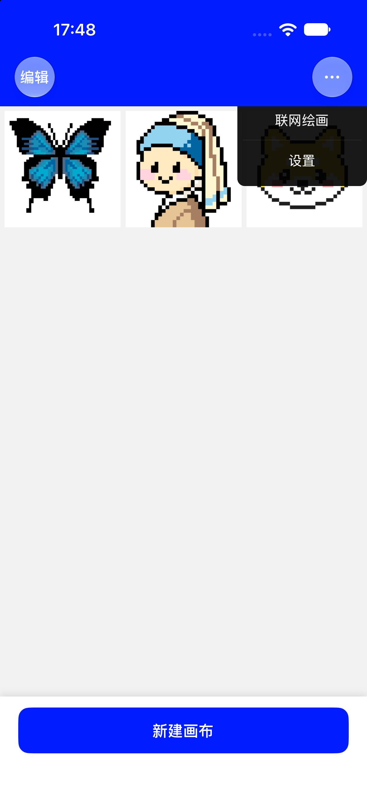
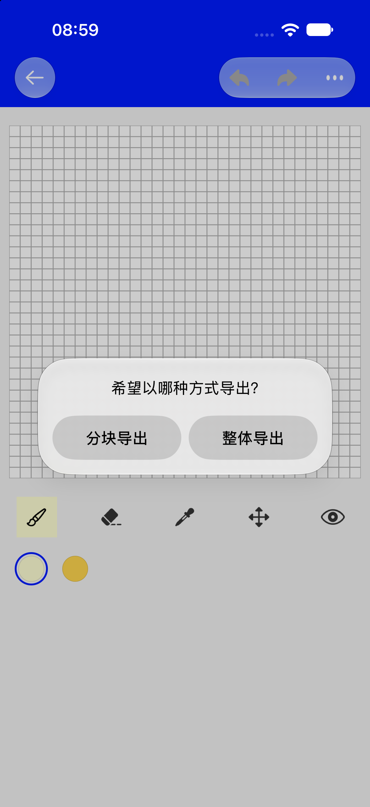
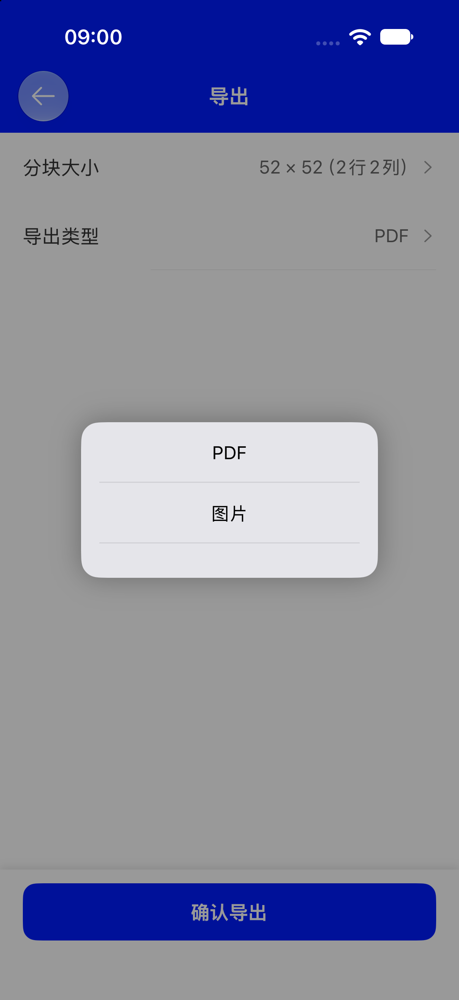
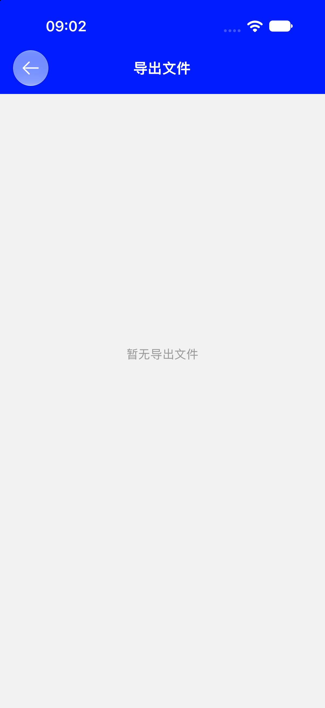

导出图片 → 一张干净的成品图
把画布按格放大成 PNG，空格透明、不带网格和色号。
- 不消耗任何额度，次数不限
- 直接存进系统相册
PIXELO · 使用教程
画完了，从画布右上角的「⋯」就能把作品带出去：存一张干净的像素图，或做成带色号、能照着拼的图纸。
先打开要导出的那张画布，点右上角「⋯」，在菜单里选「导出图片」或「导出图纸」。这是两条完全不同的路径，别选错。

把画布按格放大成 PNG，空格透明、不带网格和色号。
每格写色号，配坐标、辅助线和颜色总览，适合拼豆。
想发朋友圈、当头像、存作品 → 导出图片；想买豆子照着颜色拼 → 导出图纸。
点「导出图片」会弹出参数面板：步长就是每个格子放大成多少像素。滑块范围 4–32，默认 4；面板会实时算出「输出尺寸 W × H px」。
输出边长 = 画布格数 × 步长。例如 64 × 64 的画布、步长 4，得到 256 × 256 px 的图片。
生成时显示「正在生成图片…」，成功后提示「已保存到相册」。打开系统「照片」App 就能找到，可以再自行分享、设为壁纸或发给朋友。
只有像素本身：不含网格、坐标、色号和颜色总览；没画过的空格子是透明的（不是白底）。这一路不弹分享面板，也不会生成 PDF。
尺寸偏大时会提示「尺寸较大，生成时间会变长」；单边超过 8192 px 或总像素超过 2000 万，会提示「尺寸超出上限，请降低步长」并禁用导出按钮，把步长调小再试。首次保存若弹出「无法保存到相册」，按提示去系统设置允许 Pixelo 添加照片即可。
只有「导出图纸」会消耗额度，导出图片不占次数。第一次安装会赠送 10 次。

「购买后额外获得 1 次导出额度」，买完提示「已增加 1 次导出」，适合偶尔导一次。
「一次性买断，之后导出不再受次数限制」，解锁后提示「已解锁导出」，设置里显示「无限」。
两个入口都会打开标题为「获取导出额度」的页面，大标题「解锁无限导出」，可选「增加一次导出」或「解锁导出」，并有「恢复购买」。价格以 App Store 当前显示为准；权益与 Apple ID 绑定，换设备后用同一 Apple ID「恢复购买」即可。已解锁状态下再点导出次数，会提示「已解锁无限次导出功能」。
点「导出图纸」并通过额度检查后，App 会按画布大小决定下一步：宽度不超过 52 格直接整张导出，更大的画布会先问你一次。

生成一张完整图纸图片，直接存进相册，提示「已保存到相册」，消耗 1 次额度。
进入标题为「导出」的设置页，先定分块大小和导出类型，再点「确认导出」。

52 × 52（2 行 2 列）。PDF 或 图片，默认 PDF。从左上角开始，一行一行往右切；边缘不够一块时按实际剩余格数算，不会留空页。
页眉标「第R行第C列（共M行N列）」；切成 1 块时不显示编号。
格内写色号，四周标全局坐标，每 10 格一条橙色虚线，底部附颜色总览和每种颜色的数量。
选「分块导出」，把「分块大小」自定义成不小于画布边长的数值，整张画就只会被切成 1 页，导出类型选 PDF 即可。
逐张写入相册，完成后提示「已保存 N 张到相册」。导出图片、整体导出也都在相册里看。
所有分块合成一个 PDF，提示「PDF 已生成」，并立即弹出系统分享面板，可以顺手存到「文件」或发给别人。

确切路径是 首页 → 右上「⋯」→ 设置 → 导出文件。首页「⋯」菜单只有「联网绘画」和「设置」两项，没有直达「导出文件」。列表里可以点开预览，也可以用右侧按钮分享或删除；还空着时会显示「暂无导出文件」。
不会，一次都不扣，也没有次数限制。只有「导出图纸」（含整体导出、分块导出）才消耗额度。
说明额度已用完。可以「增加一次导出」买单次，或「解锁导出（不限次数）」一次性买断。到首页 → ⋯ → 设置 → 导出次数能看剩余次数。
画布宽度不超过 52 格时，App 直接按整张导出，不弹选择框；只有更大的画布才会问你一次。
不能，整体导出只生成一张图片并存入相册。需要 PDF 就选「分块导出」，导出类型选 PDF；若只想出一页，把自定义分块大小设成不小于画布边长即可。
生成后会立刻弹系统分享，可以先存到「文件」App。App 内也保留一份：首页 → ⋯ → 设置 → 导出文件，列表里能预览、分享、删除。
「导出文件」只收录 PDF。图片、整体导出、以及不扣额度的「导出图片」都只写入系统相册，请到「照片」App 查看。
不会。图片要确认写进相册、PDF 要确认写入文件之后才扣次数；生成或保存失败会提示「导出失败」并保留额度，可以重试。
每个格子里是对应的色号（如 A3），四周的数字是全局坐标，每 10 格有一条橙色虚线方便数格；页眉的「第R行第C列（共M行N列）」标明这块在整张画里的位置，底部还有颜色总览和每种颜色要用多少颗。
成品图 → 导出图片，去相册；拼豆图纸 → 导出图纸，PDF 在「导出文件」。
还没画完？回绘画教程继续。